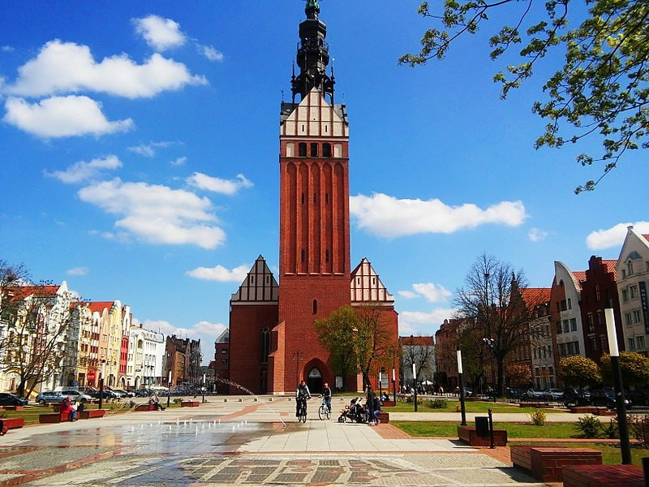
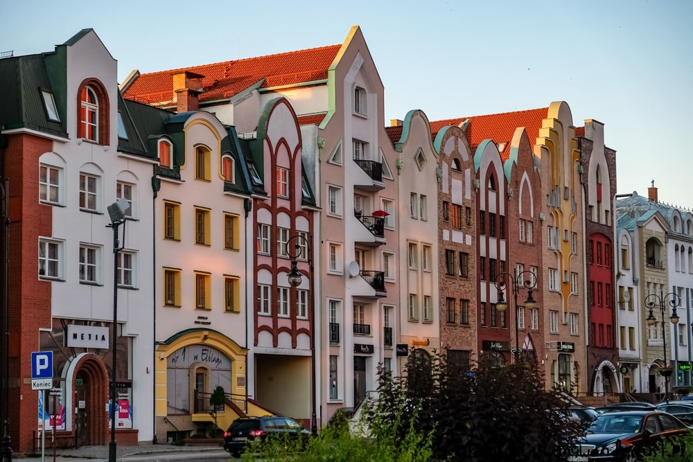
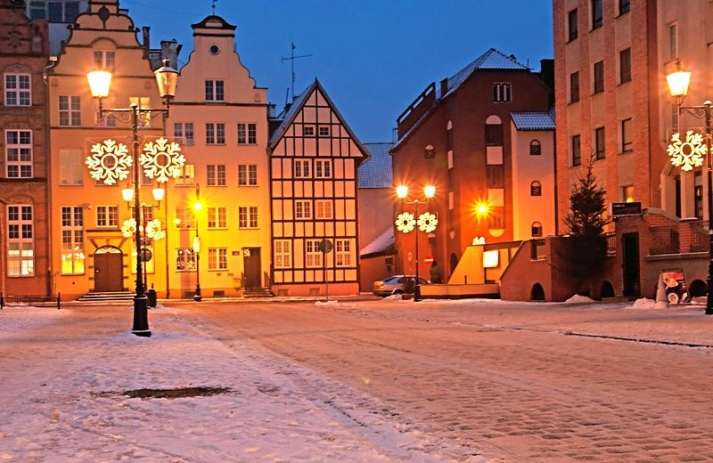
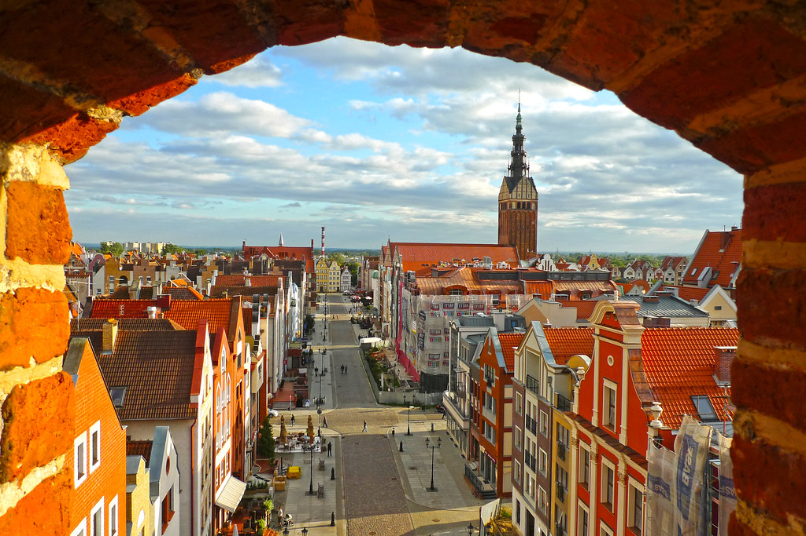

What to do in Elblag?
The most popular reasons people visit Elblag are to see the old architecture of Elblag (including churches, small bars and restaurants) and the Museum of Archaeology and History in Elblag. There is also Bazantarnia Park which is a wonderful nature and wildlife area with beautiful trails. If you would like to discover more to do while visiting Elblag, click the image to the left.
Where is Elblag?
Elblag is a city near the Baltic Sea on the eastern edge of the Zulawy region in northern Poland. If you would like to see a more detailed map of Elblag, click the image to the right.
How to get to Elblag?
The nearest airport to Elblag is the airport in Gdansk. From Gdansk, you could take the train, bus, taxi or rent a car to get to Elblag. All four of those travel options would take approximately 1-2 hours. If you want to learn more about your options of travel to Elblag, click the image to the left.





Want to see more images of Elblag? Click the image to the right!